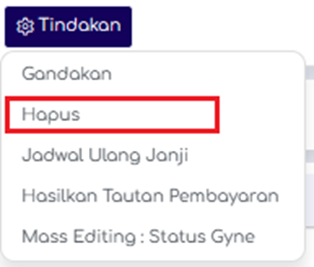

Antarmuka
Layout
Gambar dibawah ini merupakan tampilan awal pada modul Pendaftaran.
Gambar 4. Tampilan Modul Pendaftaran
View
Di modul Pendaftaran hanya terdapat 4 jenis tampilan yaitu dalam bentuk List, Kanban, Calendar, dan Pivot.
Gambar 5. Halaman Pendaftaran List View
Gambar 6. Halaman Pendaftaran Kanban View
Gambar 7. Halaman Pendaftaran Calendar View
Gambar 8. Halaman Pendaftaran Pivot View
Filter Group & Favorit
Di dalam SIMRS terdapat fitur search bar yang digunakan untuk melakukan pencarian, filter, grouping, dan favorite data pada suatu model. Dibawah search bar terdapat 3 tombol dropdown yaitu tombol filter, group, dan favorite. Search bar berada di pojok kanan atas dibawah navbar seperti gambar dibawah ini:
Gambar 9. Tampilan Filter Group & Favorite
Filter
Gambar 10. Tampilan Fitur Filter
Fitur Filter berada di semua modul SIMRS yang akan membantu user memudahkan dalam mencari data yang dibutuhkan oleh user. Untuk menggunakan fitur filter user bisa memilih opsi yang sudah disediakan oleh default SIMRS dengan mengklik tombol untuk menampilkan dropdown filter yang sudah ada.
Seperti yang terlihat pada gambar 10, filter yang sudah disediakan secara default adalah Hari ini, Pendaftaran Saya, Pendaftaran Online, Janji Mendesak, dst. Contoh misalkan kita ingin memfilter data status Pendaftaran yang masih menjadi draf, caranya klik Add Custom Filter > Status > Selesai > Apply seperti contoh dibawah ini:
Gambar 11. Tampilan Fitur Add Custom Filter
Lalu akan muncul semua Pendaftaran yang statusnya sudah selesai serta terlihat filter yang digunakan seperti gambar dibawah ini:
Gambar 12. Tampilan Halaman Pendaftaran yang Sudah di Filter
Grup
Fitur Group berada di semua modul SIMRS yang digunakan untuk mengelompokkan data berdasarkan kondisi tertentu. Untuk menggunakan fitur group user bisa memilih opsi yang sudah disediakan oleh default SIMRS dengan mengklik tombol untuk menampilkan dropdown group yang sudah ada. Seperti gambar dibawah ini, filter yang sudah disediakan secara default adalah Arrival, Tipe Registrasi, Jadwal Pasien.
Gambar 13. Tampilan Halaman Group by
Jika kita pilih salah satu grup yang sudah ada di default, contohnya kita pilih Pasien. Maka akan mengelompokkan Pendaftaran berdasarkan Pasien terlihat seperti gambar dibawah ini:
Gambar 14. Tampilan Halaman Pendaftaran berdasarkan Pasien
Dari list tersebut kita bisa melihat lebih detail dengan klik Pasien, contohnya kita pilih Tipe Registrasi Instalasi Gawat Darurat terlihat seperti gambar dibawah ini:
Gambar 15. Tampilan Halaman Pendaftaran saat sudah pilih Pasien
Favorit
Fitur Favorit berada di semua modul SIMRS yang digunakan untuk memudahkan user dalam menyimpan pencarian filter atau group by yang sudah dilakukan sehingga user tidak perlu melakukannya berulang-ulang. Untuk menyimpan pencarian filter atau group by pertama kita harus melakukan search/filter/group by sampai data yang diinginkan tampil.
Create Update Delete Selection Archive
Di bab ini akan menjelaskan bagaimana cara membuat, update, hapus, arsip pilihan pada system RS Karya Medika. Pada dasarnya cara untuk melakukannya sama pada setiap modul karena itu di bab ini akan mencontohkan dari modul Pendaftaran.
Create
Cara untuk membuat pendaftaran pasien baru yaitu: - Pilih modul Pendaftaran dan klik Menu Pendaftaran Online. - Klik tombol jika sudah maka akan muncul tampilan form untuk membuat Pendaftaran baru seperti gambar dibawah ini:

Gambar 16. Tampilan Halaman Form Create Pendaftaran
- Setelah itu input data yang harus diisi seperti Pasien, Tipe Kelas, Jenis Biaya, Cara Pembayaran, Layanan, Jadwal, dst. Jika sudah klik tombol untuk menyimpan data pasien yang sudah dibuat atau tombol untuk membatalkannya.
- Kemudian pilih tombol untuk melanjutkan pendaftaran dengan melakukan tindakan pemeriksaan dari suster.
- User bisa melihat rincian pasien rawat inap di tombol . Dan akan muncul gambar seperti dibawah ini:
Gambar 17. Tampilan Halaman Rincian Rawat Inap Pasien– List View
Jika pasien sudah keluar dari rawat inap klik pada daftar yang sedang berjalan dan akan muncul gambar seperti berikut:
Gambar 18. Tampilan Halaman Rincian Rawat Inap Pasien
Keterangan Gambar: - Information Umum = berisi informasi umum pasien, nama kerabat pasien, nomor kerabat pasien, dokter rujukan, dst. - Daftar Periksa = berisi informasi data tanggal keluar pasien rawat inap - Penilaian Suster = berisi informasi hasil diagnose dari pemeriksaan suster dan tindak lanjut berikutnya. - Penilaian Dokter = berisi informasi hasil diagnose dari pemeriksaan dokter dan tindak lanjut berikutnya. - Legal Details = berisi informasi pasien jika berhubungan dengan hukum.
Klik untuk menyelesaikan proses rawat inap.
Update/Edit
Cara untuk mengupdate/edit data pasien yang sudah dibuat yaitu: - Pilih modul Pendaftaran - Lalu pilih salah satu data pasien yang sudah ada di sistem - Klik tombol jika sudah maka akan muncul tampilan form edit Pendaftaran seperti gambar dibawah ini:
Gambar 19. Tampilan Halaman Sunting Form Pendaftaran
- Sunting data-data sesuai dengan kebutuhan
- Klik tombol untuk menyimpan data pasien rawat inap yang sudah dibuat atau tombol untuk membatalkannya.
Delete
Cara untuk menghapus Pendaftaran yang sudah dibuat yaitu: - Pilih modul Pendaftaran klik Menu Pendaftaran Online. - Lalu pilih salah satu Pendaftaran yang sudah ada di sistem. - Jika sudah maka akan muncul detail Pendaftaran seperti gambar dibawah ini:
Gambar 20. Tampilan Halaman Detail Form Pendaftaran
- Klik tombol lalu pilih Delete contoh seperti gambar dibawah ini:

Lalu akan muncul tampilan konfirmasi untuk menghapus record klik *Note: Bisa juga Mengarsipkan banyak Pendaftaran sekaligus dengan menggunakan fitur selection lalu klik Action > Archive seperti pada bab 3.4.4
Selection Contact
Cara untuk memilih beberapa kontak yang ada di sistem yaitu: - Pilih modul Kontak - Ganti tampilan dari Kanban view menjadi list view dengan cara klik tombol jika sudah maka akan muncul tampilan daftar kontak seperti gambar dibawah ini:
Gambar 21. Tampilan Halaman Daftar Contact – List View
Centang beberapa kontak yang ada contoh seperti gambar dibawah ini:
Gambar 22. Tampilan Halaman Daftar Contact – List View
Fungsi Tombol pada Tab Action
| TOMBOL | FUNGSI |
|---|---|
| Ekspor | Berfungsi untuk mengekspor data yang sudah dipilih |
| Arsip | Berfungsi untuk mengarsip data |
| Batalkan Pengarsipan | Berfungsi untuk membatalkan arsip data |
| Hapus | Berfungsi untuk menghapus data yang sudah dipilih |
Archive Contact
Cara untuk mengarsip kontak yang sudah dibuat yaitu: - Pilih modul Kontak - Lalu pilih salah satu Kontak yang sudah ada di sistem - Jika sudah maka akan muncul detail contact seperti gambar dibawah ini:
Gambar 23. Tampilan Halaman Detail Contact
- Klik tombol Tindakan lalu pilih Arsip contoh seperti gambar dibawah ini:
*Note: Bisa juga Mengarsipkan banyak kontak sekaligus dengan menggunakan fitur selection lalu klik Action > Archive seperti pada bab 3.4.4
Smart Button
Smart button di sistem berfungsi sebagai shortcut yang berguna untuk memudahkan user melihat semua record yang saling berhubungan dengan modul lain atau menu lainnya pada tampilan detail formulir.
Gambar 24. Tampilan Halaman Daftar Contact
Fungsi Tombol
| TOMBOL | DESKRIPSI |
|---|---|
| Berfungsi untuk melihat semua sales order yang sudah dilakukan oleh kontak tersebut | |
| Berfungsi untuk melihat semua purchase order yang sudah dilakukan oleh kontak tersebut | |
| Untuk melihat semua invoice yang ada pada kontak tersebut |